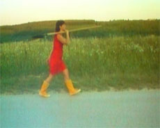

|
ANGELA FECHTER

Gravely | 2008 | 5'
Format: DV
Kamera: Nicola Müller
Schnitt: Wolfgang Leitner
In Gravely sieht man eine Frau, die eine Grube gräbt. Die Hintergründe dafür werden nicht erklärt, lediglich dokumentarisch anmutend kann man das stetig tiefer werdende Ausheben des Erdloches verfolgen. Anschließend legt sich die Frau wie selbstverständlich in die Vertiefung. Die Szene wirkt friedlich.
Als jemand Erde auf den Körper der Frau häuft, lässt sie dies ungerührt geschehen. Erst der letzte Schwenk zeigt, dass es tatsächlich sie selbst ist, die sich begräbt.
Der Kurzfilm kann als ambivalente Selbstentfremdung wie Selbstbehauptung gesehen werden. Durch das Begrabenwerden formuliert sich eine Selbstartikulation aus dem Schweigen.
Angela Fechter, geb. 1967 in München. Studium der Germanistik und Anglistik in München und London. Nach dem Abschluss Studium an der Akademie der Bildenden Künste München bei Cristina Iglesias, Rita McBride und Johannes Brunner.
Filme (Auswahl): Selbstmordset city version 1998 | Selbstmordset country version 1998 | Giftmordset femme-homme 1999 | Je t¢aime comme je t¢aime 2000 | Kampfzone 2001 | Minus 2002 | Im Spiegel ist Sonntag 2006
Ausstellungen (Auswahl): Erste Jahre der Professionalität, Galerie der Künstler, München 2003 | Links, Aldwych Tube Station, London, UK 2004 | Nacht und Wald, Galerie Royal, München 2006 | Terrain, Orangerie, München 2007 | Minus one, Aldwych Tube Station, London, UK 2004 | Nacht und Wald, Galerie Royal, München 2006 | Terrain, Orangerie, München 2007 | UNDERDOX 03 2007 | Westendstudios, Calerie Caduta Sassi, München 2008
zurück
|